IDEs and virtual environments
While you might have used Integrated Development Environments (IDEs) such as PyCharm, RStudio and Visual Studio Code before to simply run your code, in this session, we want to explore more functionalities of the tools. To follow best practices, we loosely based the content on the lesson Byte-sized RSE: Code Development & Debugging with IDEs published in the Carpentries Incubator as well as the lesson on Python and Visual Studio Code published in the Oxford University training platform. Please have a look at it, if you are interested in more examples. There is also a podcast episode by Code for Thought on this topic.
Let us start with an introduction to IDEs:
What is an IDE?
In its essence, an IDE is a graphical interface that offers you a workspace to write, edit, test, and debug code. It is a modern approach to editors that are meant to ease your programming workflows.
Before modern IDEs, developers used text editors (you might have used one before) to write their code and then used other tools separately to run or debug the code. These solutions were mostly not user-friendly, which is why modern IDEs were created. Many of them also support multiple programming languages.
Why should I use an IDE?
An IDE is a one-stop shop for programming, it offers you everything you need in one place. Amongst other functionalities, they help to…
…format your code. Most IDEs support automatic indentation (as well as other automatic code formatting) and syntax highlighting, which make your code more readable and consistent.
…auto-complete your code. IDEs such as PyCharm and Visual Studio Code can suggest the next syntactically correct option, e.g., when you type the first few letters of a function.
…have a look at the documentation. IDEs already show you a preview of the arguments needed when choosing a function, and they can also help you look up references.
…debug your code. Did you make a mistake somewhere but can’t figure out exactly what went wrong? IDEs offer functionalities that allow you to jump into the code and inspect how your variables change.
…run tests. The IDEs can support you in running and managing tests of your code.
…view various file formats. In their essence, IDEs also function as text editors, which means you can open many different file formats such as CSV, JSON, YAML, HTML, and TXT.
…use version control. The IDEs support you in tracking changes to your code by enabling you to link them to version control systems such as Git.
…use virtual environments. Most IDEs support you in creating virtual environments, allowing you to install packages and modules without changing the settings of your device.
…personalize your programming experience. You can make most IDEs “your own”. They offer extensions and settings which change appearance, usability and enable shortcuts.
Which IDEs are popular and offered in the EUR Software Catalog?
The most common IDEs (which we will also have a look at today) are:
- Visual Studio Code (VS Code)
- supports various programming languages
- PyCharm (Community version)
- mostly supports Python
- RStudio
- mostly supports R
What might be also handy to know, but will not be explained today:
- JupyterLab
Where can I find the IDEs?
VSCode
EUR-managed PC
VSCode can be found in the software catalog and can be downloaded using the Company Portal or this link.
Self-managed PC
Go to this website and download it for your operating system.
PyCharm
EUR-managed PC
PyCharm can be found in the Software catalog of EUR. It can be downloaded using the Company Portal on the PC or via this link.
Self-managed PC
Go to this website and download the Community Edition for your operating system.
RStudio
EUR-managed PC
RStudio can be found in the software catalog and can be downloaded using the Company Portal or this link.
Self-managed PC
Go to this website and download the Open Source Edition for your operating system.
At this point, I would like to show you how to use the various IDEs. For clarity, this will be split into three different subpages. Please choose the IDE that you want to know more about and follow the material from that point on!
Get to know RStudio
Do you want to be more efficient when using RStudio? The following overview is based on the RStudio User Guide and also contains screenshots taken from that website. It has been shortened to mostly show relevant content.
A quick tour through your IDE

The interface of RStudio shows you four so-called “panes”:
- The Source pane (1) allows you to edit your R scripts.
- The Console pane (2) can be used to write short R commands that do not need to be listed in the script (e.g., help() or view() to access more information).
- The Environment pane (3) shows your environment, i.e., the objects that you created.
- The Output pane (4) shows your plots, tables or html files.
As you can already see in the screenshot, the four panes have multiple functions. In the Output pane, for example, you can also manage your packages, look at the documentation or see your folder structure.
How do I run simple code?
To run simple code, you can just use the Console pane. However, to actually perform analyses, we recommend that you create a new Project. To do that, click on File > New Project and choose your working directory.
After that, you can click on the green plus in the upper left corner to create an empty .R script.
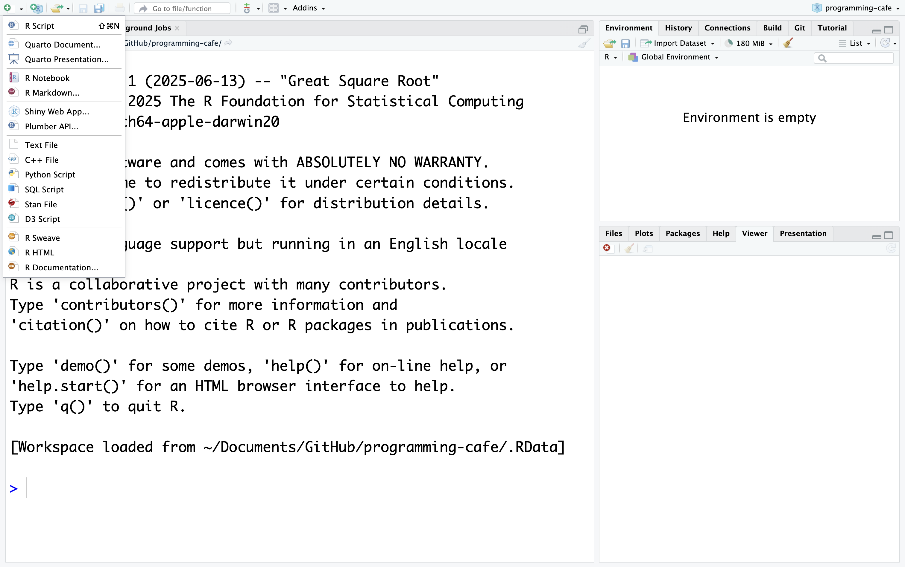
In this document, you can write all your code! Do not forget to save it in your working directory!
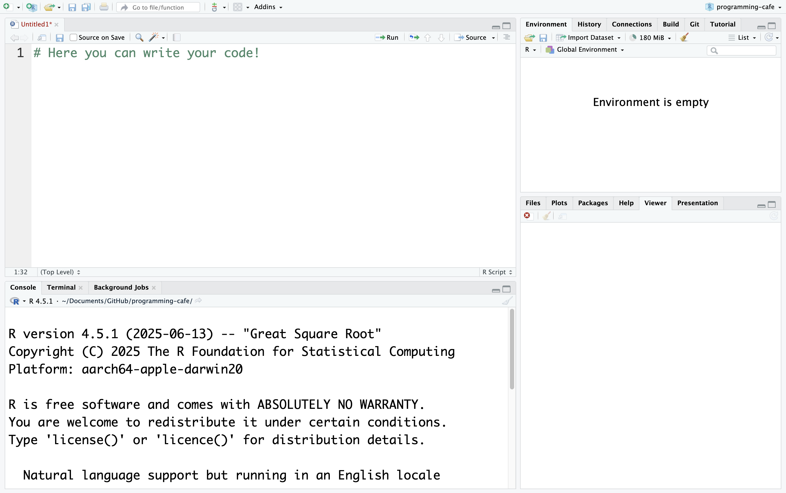
Get to know the basic features
Smart indentation & syntax highlighting
While writing your own code, R highlights important expressions in blue and comments in green. It also helps you manage your indentation, such as when writing a function. The following screenshot provides an example:
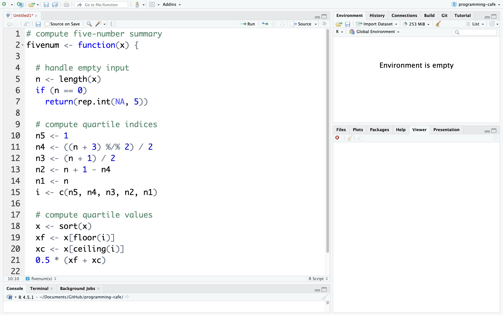
Autocompletion
RStudio can help you with writing your code by offering automatic completion using the Tab key. It automatically completes object names, function names and even possible arguments.
Here you can see an example of function completion:
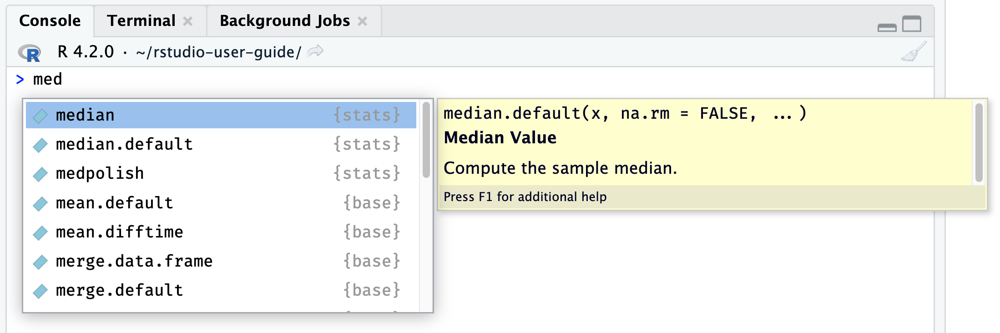
And here an example of argument completion:
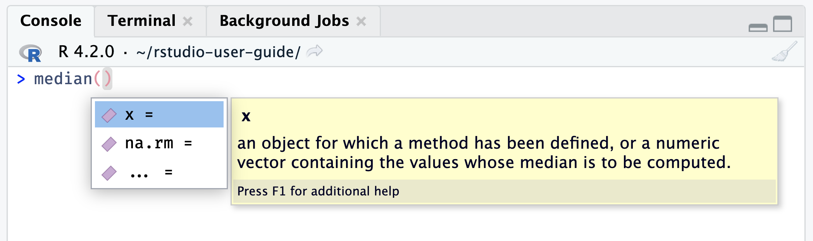
Documentation
Within R, you can have a quick look into the documentation by using the help()function or using ?. The documentation will then be opened in the Output pane.
In the following screenshot you can see the documentation of the sqrt()function:

Debugging
If you encounter a bug and want to understand its cause, you might consider using debugging. To do this, you need to tell R when to inspect the status of your program. You can achieve this by setting breakpoints with a left click next to your code (on the index/line number to the left).
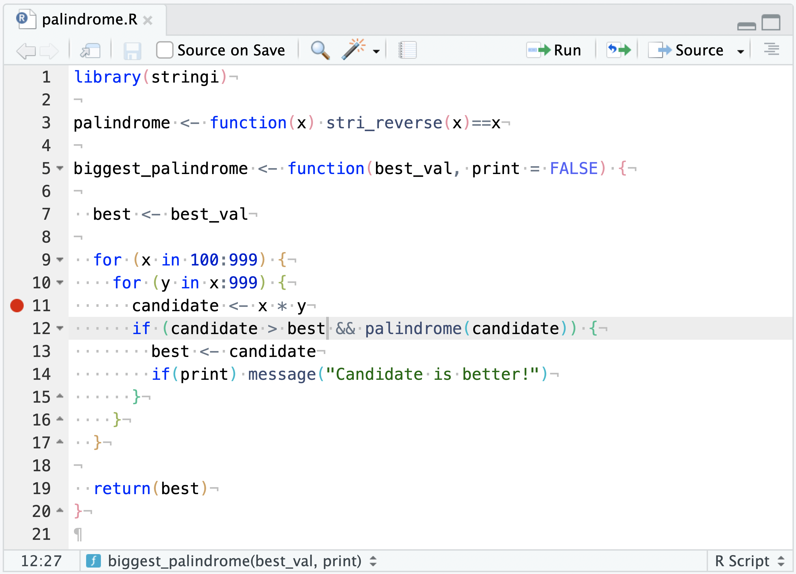
Once your program reaches the breakpoint, it will stop and give you the insights that you wanted.
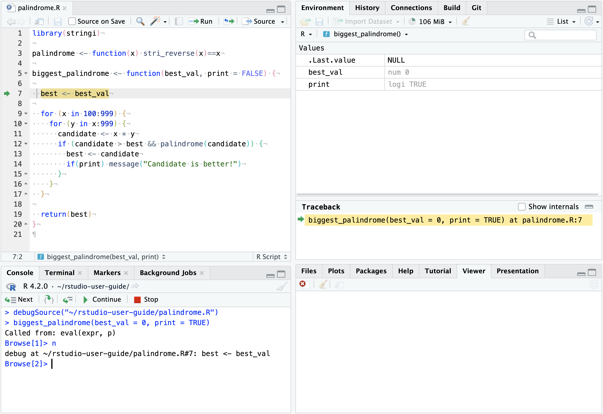
If you are interested in how to debug, please have a look at the RStudio documentation. We hope to offer a Programming Café session on it in the future!
Code Diagnostics
RStudio can analyze your code to identify potential errors and stylistic issues! You can enable this feature in the settings Settings > Code > Diagnostics.
Turning the diagnostics on, you will see the potential problems. The screenshot below shows an example of a stylistic issue. R Studio offers a good overview of all potential messages here.
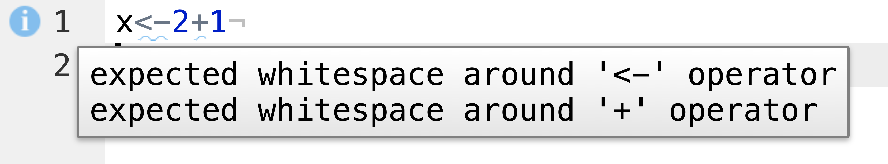
Version control
It is possible to connect R Studio with Git and Subversion. To do that, you can go to Settings > GIT/SVN and then enable the version control. Once you enabled it, you will find the Git tab in the Environment pane which shows you the current changes. It also allows you to commit, push and pull using the Git dropdown.

If you want to know more about version control, consider following one of our Git courses or have a look at the RStudio documentation.
Personalize your experience
While the first thought that comes to mind when thinking about personalizing an IDE is adapting the color scheme, RStudio also offers various other customizing options.
Amongst others, you can
Further reading
RStudio offers an overview of tutorials that can you follow online which includes RLadiesSydney’s opinionated tour on RStudio
Want to learn more about R? The O’Reilly handbook on “Hands-On Programming with R” is freely available here, the handbook on “R for Data Science” can be accessed here
The Data Carpentries offer a course on “R for Social Scientists” which we actually regularly offer in-person at EUR (in collaboration with TUDelft, Leiden and VU).
Get to know PyCharm
The following overview is based on the PyCharm User Guide and also contains screenshots taken from that website. It has been shortened to mostly show relevant content.
A quick tour through your IDE
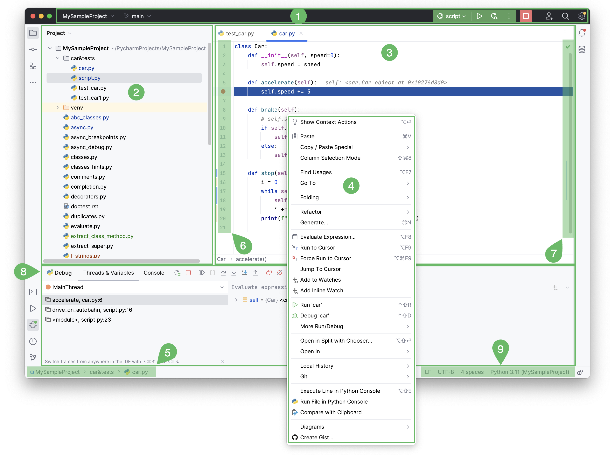
The interface of PyCharm shows you nine different elements.
- The window header (1) contains buttons that allow easy access to import functions such as running the code.
- The project tool window (2) shows the folder structure. It can be used to navigate between files.
- The editor (3) allows you to edit your Python scripts and switch between open files using the tabs.
- When you right-click, the context menu (4) opens. It provides a convenient way to access functions, such as refactoring a file.
- The navigation bar (5) shows you where you are right now and allows you to switch to your parent folders.
- The gutter (6) shows you in which line of code you are working and allows you to set breakpoints to debug your code.
- The scrollbar (7) provides hints and notifications about your code, such as style issues or potential errors.
- The tool windows (8) allow you to access the console and the debugger.
- The status bar (9) shows you the file formatting, some warnings and the virtual environment that you are in.
How do I run simple code?
You can run simple code by writing it in the console, but it is recommended to create a project first and then write your code in a Python script to run it.
To create a project, you click on File > New Project then choose Pure Python and your project location. Afterward, you can select the Python version to work with and decide whether to set up a Git repository.
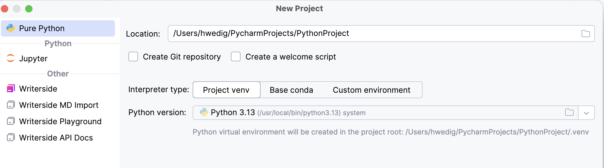
If you click Create a main.py welcome script PyCharm adds the main.py file to your project.
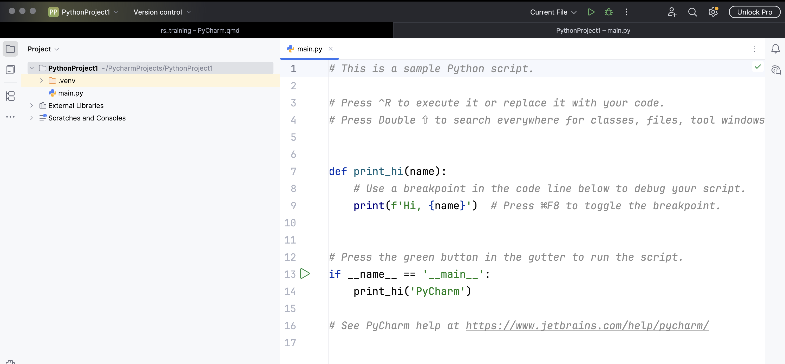
After writing your code, you can click on the play button in the upper left corner to run your code.
Get to know the basic features
Indentation & Syntax Highlighting
PyCharm automatically indents your code according to the programming language that you chose. The status bar shows you the setting (e.g., “4 spaces”).
Aside from automatically indenting your code, PyCharm also highlights keywords, comments, parameters, type hints, and other elements as you can see in the example of the welcome script.
Autocompletion
PyCharm helps you to complete the names of classes, methods, and keywords within your project. By default, it displays the code completion automatically as you type. You can choose which suggestion to accept by using the arrow keys and Enter.
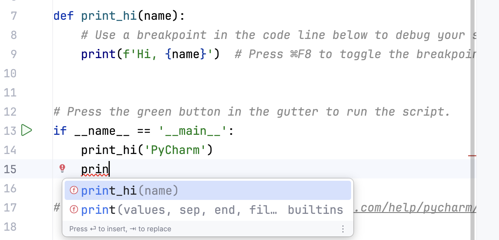
Intentions
PyCharm can give you various tips while you program. These suggestions and/or tips will be shown together with a light bulb.
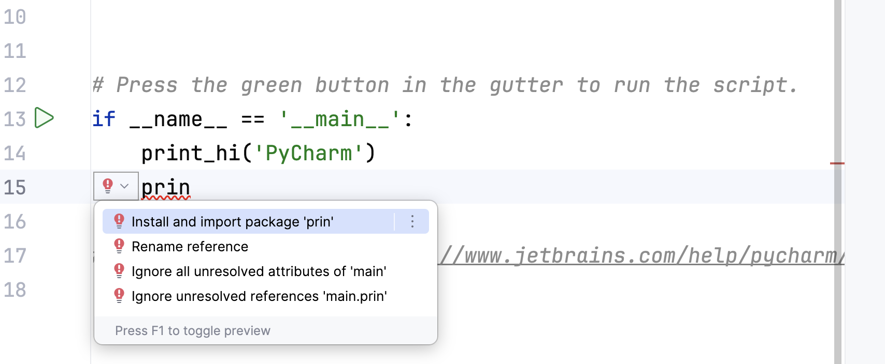
Checking regular expressions
If you work with regular expressions, PyCharm can help you check whether your string matches your expression. To do that, you can click Option (or Alt) and Enter when your mouse is above the regular expression.
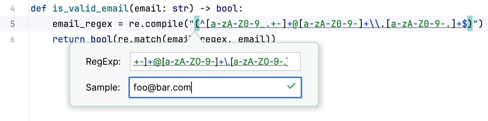
Viewing reference documentation
If you want to look up certain functions, you can press F1 (or Ctrl + Q) while your mouse is on the function name. PyCharm will give you an insight into the documentation then.
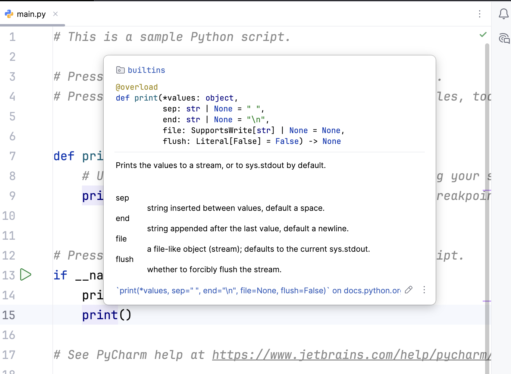
Optimize your code
PyCharm can inspect your code according to style guidelines. To use this handy function, click on Code and then on Inspect code....
Inspecting the code allows PyCharm to detect and fix issues in your code. It identifies dead code (i.e., unused code), potential bugs, spelling errors, and suggests improvements to your style (e.g., code structure).
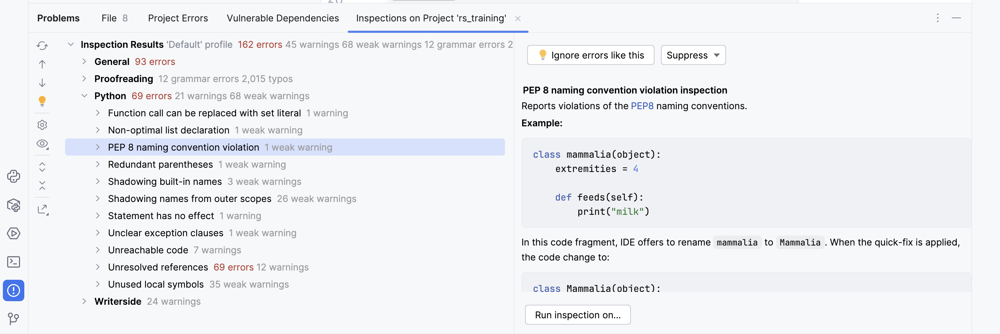
After clicking on the corresponding item, PyCharm will suggest you possible changes or improvements.
Debugging
PyCharm can help you debug your code and check the status of your variables during execution. To use this feature, you can set breakpoints in the gutter, which will cause PyCharm to pause the process at those points.
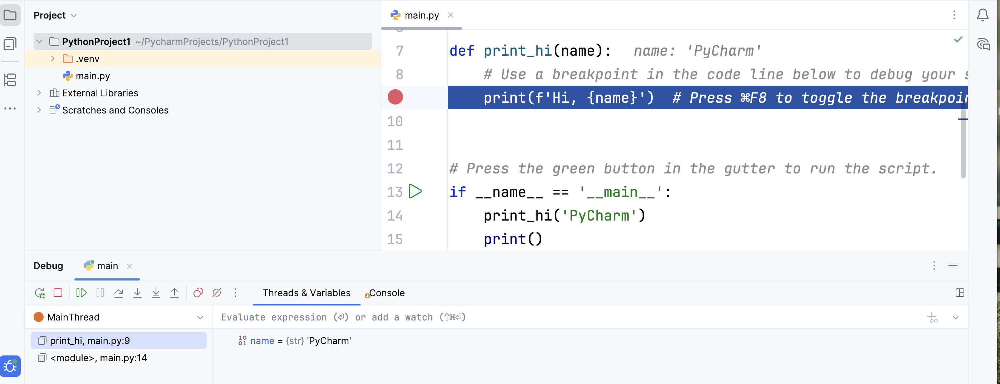
After setting breakpoints, clicking the small bug icon in the upper-right corner starts the program and launches the debugger. Once the process stops, the debug window opens, allowing you to step over, step into, or continue execution.
Version control
Your IDE can connect to a version control system of your choice.
The easiest way to use Git is to directly set up the connection at the beginning of the project. To do that, you can flag the option Create Git repository when creating the project.
After setting up Git, PyCharm can visualise your changes and allows you to commit and push directly from the IDE.
For more information, you can have a look at the PyCharm documentation here or follow one of our upcoming sessions on version control!
Personalize your experience
PyCharm offers various plugins and themes to personalize your IDE.
You can find an overview of all plugins here. Funny enough, you can even replace your progress bar with random Pokémon using the Pokémon progress plugin.
You can also customize the colour scheme and fonts.
Link your IDE with SURF tools
You can use PyCharm for remote development (e.g., with a SURF product). SURF provides a tutorial here.
Further reading
- JetBrains (the company behind PyCharm) offers various tutorials on PyCharm.
- Want to learn more about Python? Have a look at our Python course “Python Fundamentals” on the left side of this website.
- Similar to the Data Carpentries, the Carpentries also offer “Programming with Python” in their Software Carpentry lessons. Are you interesting in the attending the course in-person? Please contact one of our trainers!
Get to know VS Code
The following overview is based on the Visual Studio Code Documentation as well as the Carpentry lesson on IDEs and also contains screenshots taken from these websites. The content has been shortened to mostly show relevant content.
A quick tour through your IDE

Visual Studio Code is divided into six main areas:
- Activity Bar (A): this bar on the left gives you fast access to context-specific indicators, e.g., Git, run your code, search for files and look for extensions.
- Primary Side Bar (B): this bar contains your file structure, the outline and timeline of your project.
- The Editor groups (C): here you can edit your scripts and other files.
- The Panel (D): this area shows the output, debug information, errors and warnings, and gives you access to an integrated terminal
- The Status Bar (E): this bar shows you information about the opened project and the files you edit.
- The Contextual Edit Menu (F): this menu opens when you right-click. It shows you contextual options.
How do I run simple code?
To run simple code, you just use the terminal access in the panel. However, to write your own scripts, we recommend that you create a folder locally and then open it with VS Code using File > Open Folder.

After opening the folder, you can click on File > New File... to create a new script of your choice. After typing in the file name with the right file format (e.g., .py) a new script opens in the editor fields.

In this document, you can write all your code! Do not forget to save it!
Attention! To run Python or R code, you need to install the Python or R extensions. These extensions give you more language-specific content such as documented here for Python and here for R.
Get to know the basic features
Indentation & Syntax Highlighting
Similar to other IDEs VS Code highlights your syntax according to the programming language that you chose. The following example shows the coloring of a Python script:

You can see that functions are colored purple, in-built words are pink and function arguments are colored orange. You can adjust these colors using Code > Settings > Themes.
In addition to syntax highlighting, VS Code supports text indentation and automatically adjusts the indentation level based on the syntax (e.g., when writing a function).
Code Formatting
You can use VS Code’s built-in support to format your code. To access this feature, right-click within the document you want to format to open the contextual edit menu. Once opened, the following menu will appear:
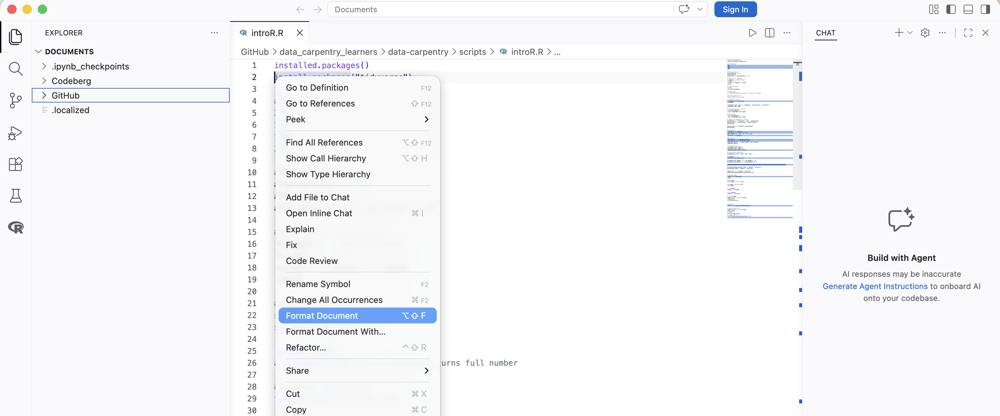
By clicking on Format Document, elements such as indentations, whitespaces, and empty lines will be adjusted to follow a unified style.
Autocompletion
VS Code offers the IntelliSense feature, which includes functionalities such as code autocompletion.
IntelliSense in VS Code relies on a language service, which uses an understanding of the language’s rules and an analysis of your source code to provide intelligent code suggestions. When the language service identifies possible completions, these suggestions will appear automatically as you type.
The following example shows an example of an R script:
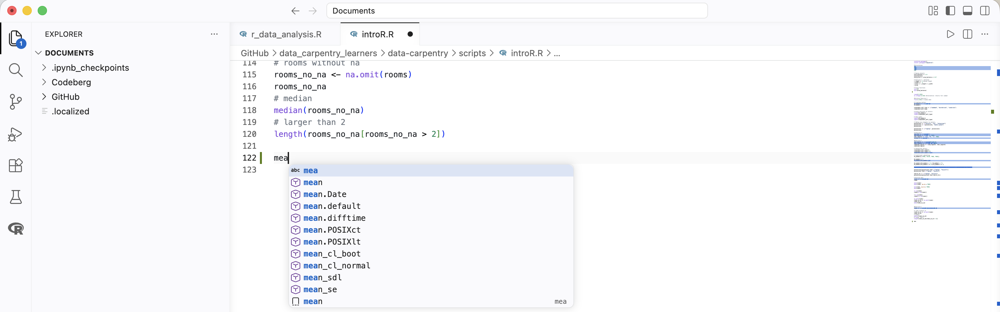
Documentation
Like many other IDEs, VS Code displays a preview of the code documentation when you hover over a particular function.
Example R: 
Example Python: 
For R, you can also open the specific help for a selection with the help of the contextual edit menu and a click on Open help for selection.
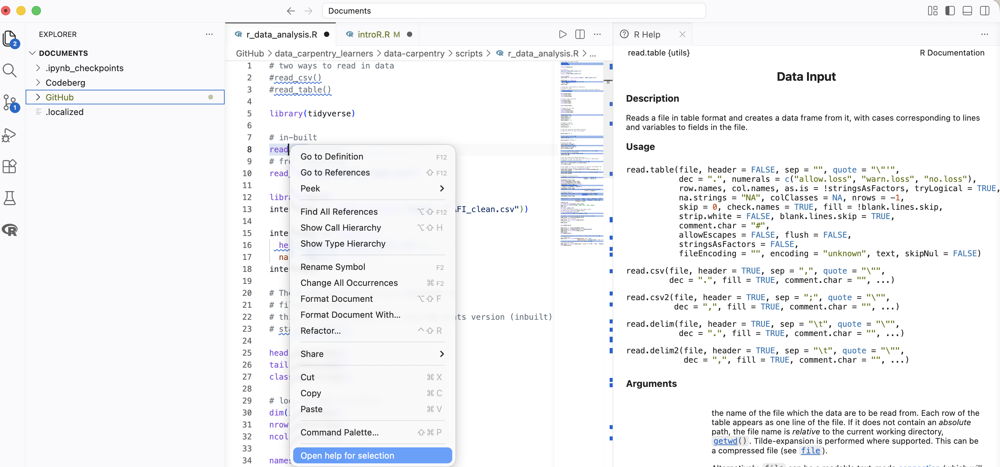
Debugging
VS Code allows you to debug your program, meaning you can analyze its behavior while it runs. To enable debugging, you’ll need to install a relevant debugging extension for your programming language from the Visual Studio Marketplace. Afterward, you may need to set up a debugging configuration for your project. Once you click Run > Start Debugging, Visual Studio Code will guide you through the setup process.

After everything is configured, you can place breakpoints on the left margin of your code.

Once the debugging process begins, new windows will appear in your editor, providing insights into your code.

Version control
VS Code allows you to connect with your Git repositories and manage your version control with the IDE.
By clicking on the third button in the activity sidebar, you will see an overview of all changes and the history of your Git repository. Additionally, you can compare the current version with the uploaded version, as demonstrated in the example below.

For more information about Git & GitHub, please follow one of our upcoming courses!
Personalize your experience
VS Code is one of the most customizable IDEs. You can not only adapt the theme and layout, but your whole programming experience using the extensions and the settings.
This website gives a nice overview of the most basic options. You can also find an overview of how to make it more accessible here.
Link your IDE with SURF tools
You can also use VS Code for remote development (e.g., with a SURF product). SURF provides a tutorial here.
Further reading
You can find a tutorial on Data Science with VS Code on their website.
It is possible to combine jupyter notebooks with VS Code.
VS Code provides an overview of tips and tricks here.
More than a feature: Virtual environments
Whenever we start a new programming project, it’s a good idea to create a matching virtual environment. You might wonder why this is necessary. A virtual environment makes it easier for you (and anyone else using your project) to reuse your work and maintain control over the exact package versions the project depends on.
In practice, using a virtual environment is like creating a small, isolated computer that contains its own programming language version (for example, Python 3.6) and its own set of package dependencies, independent of those on your actual machine. This prevents confusion about which package, which version, or even which programming language belongs to which project, keeping everything clean and organized.
A typical way to create a virtual environment directly in your machine terminal is using conda. After installing conda directly or via an anaconda distribution, creating a virtual environment is as easy as typing
conda create --name env-nameafter that, you can activate the specific environment using
conda activate env-nameand once activated, to install new packages you use
conda install package-nameAside form this use of conda in the terminal (or console), IDEs also have the option to create a virtual environment when you create a project.
Creating a virtual environment with RStudio
In RStudio, you can create a virtual environment using renv. To do that, you have to click on Tools > Project Option > Environments after that, you will see the following menu.
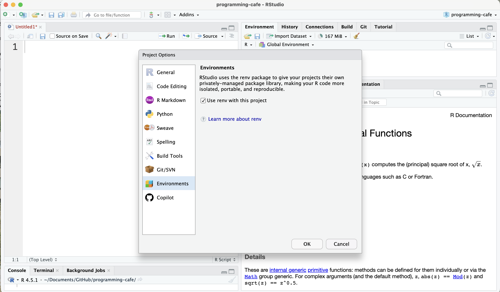
When you use renv for the first time, you will see the following message in your console:renv: Project Environments for R
Welcome to renv! It looks like this is your first time using renv.
This is a one-time message, briefly describing some of renv's functionality.
renv will write to files within the active project folder, including:
- A folder 'renv' in the project directory, and
- A lockfile called 'renv.lock' in the project directory.
In particular, projects using renv will normally use a private, per-project R library, in which new packages will be installed. This project library is isolated from other R libraries on your system.
In addition, renv will update files within your project directory, including:
- .gitignore
- .Rbuildignore
- .Rprofile
Finally, renv maintains a local cache of data on the filesystem, located at:
- "~/Library/Caches/org.R-project.R/R/renv"
This path can be customized: please see the documentation in `?renv::paths`.
Please read the introduction vignette with `vignette("renv")` for more information.
You can browse the package documentation online at https://rstudio.github.io/renv/.
Do you want to proceed? [y/N]: Once you type in y, RStudio will create the environment, and you can continue using RStudio like you are used to (i.e., using install.packages()). After installing a package and checking whether your code still works, you can use renv::snapshot() to log the package versions that you have, so that others can recreate your environment. You can find more information on how to use renv here.
Creating a virtual environment with PyCharm
In PyCharm, there are multiple ways to set up a virtual environment. The fastest way is to create it when creating a new project. To do this, click on File > New Project... and you will see the following window:
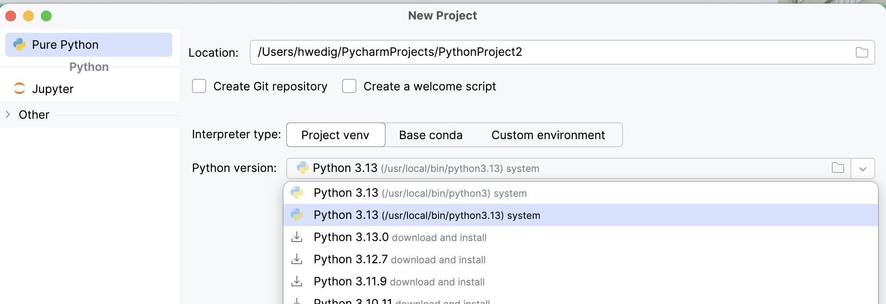
In this window, you can not only choose whether you want a project venv, base conda or custom environment, but also which Python version the environment should have. After creating the environment, you can install packages in the console of PyCharm using pip (or for conda environments using conda) as well as the Python packages tool window.
Another way to create a virtual environment for an existing project is to click on the Python Interpreter selector (in the lower right corner) and either choose the interpreter (and venv) of choice or click on Add Interpreter > Add Local Interpreter. Afterward you will get a similar window as shown for the project creation.
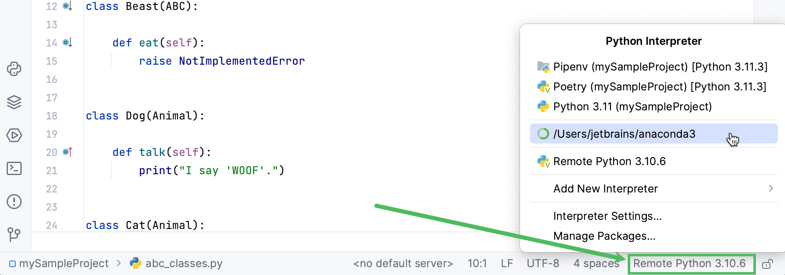
To save the environment and to be able to share the packages (and versions) that you have, you can either follow this guide or use pip freeze > requirements.txt in the console.
Creating a virtual environment with VS Code
Similar to PyCharm, in VS Code you can set and create your virtual environment using the environment editor in the lower right corner. After clicking on it, a menu will open under the search bar, where you can either choose an existing environment or create your own venv.
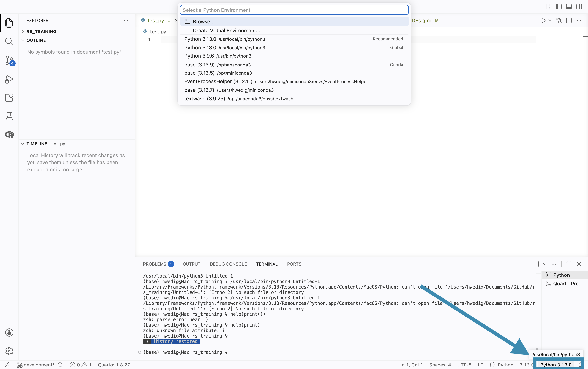
Once you click on + Create new Virtual Environment... the following options will be shown:
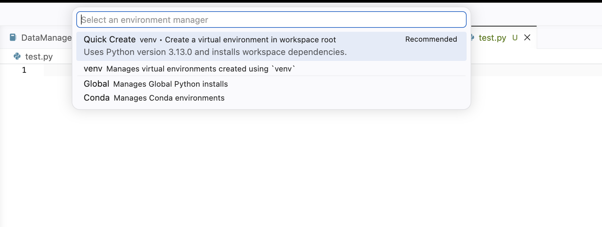
You can choose the environment that fits your needs here.
After creating the venv, you can use the VS Code terminal to install new packages.
To save the environment and to be able to share the packages (and versions) that you have, you can use pip freeze > requirements.txt in the terminal.